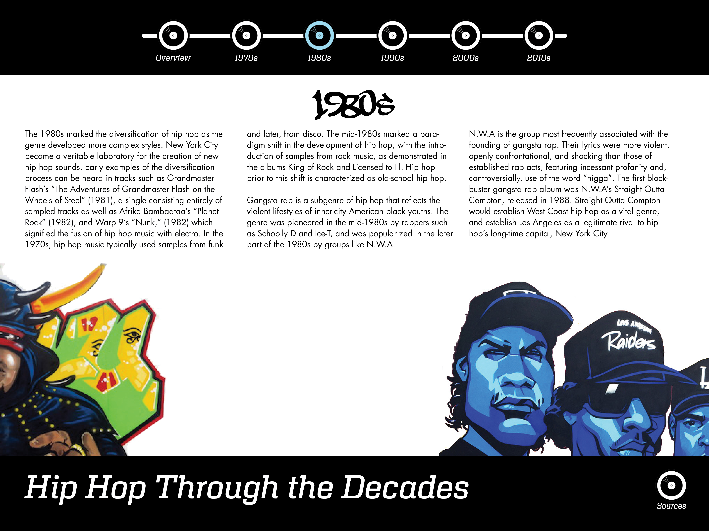
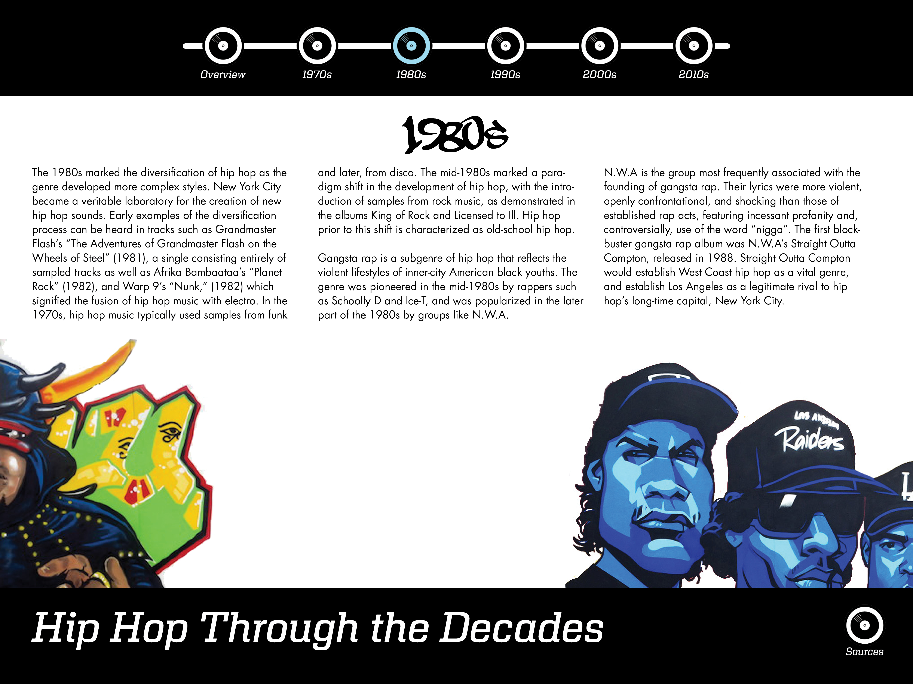

Microsite Mockup
 The homepage has a large image on the front and a navigation bar on top with record players as buttons. When hovering over the record players, they rotate as if on a turntable.

When clicking between different decades, the background image slides over as if it's just one continuous image that spans the artists of every decade. Right now the artists on the edge of the screen represent transitions from the past decade to the present one or vice versa. After making this mockup, I would consider having one or two artists in between them to include more visuals from each decade and to deal with the negative space that is currently serving no purpose.
The homepage has a large image on the front and a navigation bar on top with record players as buttons. When hovering over the record players, they rotate as if on a turntable.

When clicking between different decades, the background image slides over as if it's just one continuous image that spans the artists of every decade. Right now the artists on the edge of the screen represent transitions from the past decade to the present one or vice versa. After making this mockup, I would consider having one or two artists in between them to include more visuals from each decade and to deal with the negative space that is currently serving no purpose.